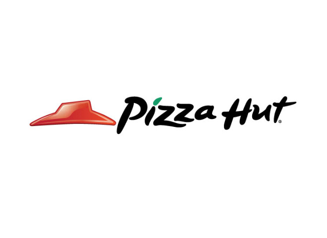

"<!DOCTYPE html>
<html lang="ko">
<head>
    <meta charset="UTF-8">
    <meta name="viewport" content="width=device-width, initial-scale=1.0">
    <title>피자 MBTI 테스트</title>
    <link rel="stylesheet" href="https://cdn.jsdelivr.net/npm/bootstrap@4.5.3/dist/css/bootstrap.min.css" integrity="sha384-TX8t27EcRE3e/ihU7zmQxVncDAy5uIKz4rEkgIXeMed4M0jlfIDPvg6uqKI2xXr2" crossorigin="anonymous">
    <link rel="stylesheet" href="style.css">
</head>
<body class="container">
    <article class="start">
        <div class="line mt-5">
            <h3 class="mt-3 text-center" style = "color: #191718">내가 피자 재료라면?</h3>
            <h1 class="text-center" style = "color: #cf0714"><strong>PIZZA MBTI TEST</strong></h1>
        </div>
        
        <button id="button" class="btn btn mt-3" style= "background-color: #cf0714; color: white;" onclick='start();'>테스트 시작하기</button>
        <div class="team">2021 피자헛 공모전 [나의 피자 MBTI] 팀</div>
    </article>

    <article class="question">
        <div class="progress mt-5">
            <div class="progress-bar" role="progressbar" style="width: calc(100/12*1%)"></div>
        </div>
        <h2 id="title" class="text-center mt-5">문제</h2>
        <input id="type" type="hidden" value="EI">
        <button id="A" type="button" class="btn mt-5" style= "background-color: #cf0714; color: white;" >Primary</button>
        <button id="B" type="button" class="btn mt-5" style= "background-color: #cf0714; color: white;" >Primary</button>
        <div class="team">2021 피자헛 공모전 [나의 피자 MBTI] 팀</div>
    </article>

    <article class="result">
        <br>
        <div class="line2">
        <br>
        <br>
        
        <h2 id="pizza" class="pizza1 mt-4 text-center p-3" style="color: #cf0714">재료 이름</h2>
        <h3 id="explain" class="result-explain text-center mt-4">설명</h3>
        <br>
        <div class="rectangle mt-6 mb-4"></div>
        <h3 class="pizza1 text-center" style="color: #383a43">나와 잘 맞는 친구</h3>
        <h3 id="friend" class="pizza1 text-center" style="color: #325a38">재료 이름</h3>
        
        <br>
        <div class="rectangle mt-4 mb-4"></div>
        <h2 class="text-center mt-5">추천 피자헛 메뉴</h2>
        <h3 id="name" class="result-name text-center mt-4">이름</h3>
        
        <h3 id="line" class="name-explain text-center mt-4">설명</h3>
        <br>
        <div class="rectangle mt-4 mb-4"></div>
        <h2 class="share text-center mt-5">추천 피자 주문하러가기</h2>
        <a class="banner-img" href="https://www.pizzahut.co.kr/main">
            
        </a>
        <div class="rectangle mt-4 mb-4"></div>
        <div class="share text-center mt-5">친구에게 공유하러가기</div>
        <br>
        <!-- Go to www.addthis.com/dashboard to customize your tools -->
        <div class="addthis_inline_share_toolbox_y43u"></div>
        <div class="team">2021 피자헛 공모전 [나의 피자 MBTI] 팀</div>
        </div>
    </article>

    <input type="hidden" id="EI" value="0">
    <input type="hidden" id="SN" value="0">
    <input type="hidden" id="TF" value="0">
    <input type="hidden" id="JP" value="0">
    <script src="https://code.jquery.com/jquery-3.5.1.slim.min.js" integrity="sha384-DfXdz2htPH0lsSSs5nCTpuj/zy4C+OGpamoFVy38MVBnE+IbbVYUew+OrCXaRkfj" crossorigin="anonymous"></script>
    <script src="https://cdn.jsdelivr.net/npm/bootstrap@4.5.3/dist/js/bootstrap.bundle.min.js" integrity="sha384-ho+j7jyWK8fNQe+A12Hb8AhRq26LrZ/JpcUGGOn+Y7RsweNrtN/tE3MoK7ZeZDyx" crossorigin="anonymous"></script>
    <script>
        var num = 1;
        var q = {
            1: {"title": "친구들이 피자를 먹는다고 한다면?", "type": "EI", "A": "주변 맛집을 찾아본다.", "B": "당연히 배달 어플을 켠다."},
            2: {"title": "광고에서 맛있는 피자를 발견한다면?", "type": "EI", "A": "바로 친구들에게 먹으러 가자고 한다.", "B": "배달 어플로 찾아본다."},
            3: {"title": "주문한 음식이 나왔다. 바로 할 행동은?", "type": "EI", "A": "SNS에 사진을 찍어 올리고 주변 친구들을 태그한다.", "B": "사진 찍는 친구가 있다면 보내달라고 한다."},
            4: {"title": "자기 전 내일 무엇을 먹을지에 대한 생각을?", "type": "SN", "A": "한다.", "B": "하지 않는다."},
            5: {"title": "나의 냉동실 안에는?", "type": "SN", "A": "냉동 전용 식품만 가득하다.", "B": "사실 얼려둔 배달음식들도 있다."},
            6: {"title": "예상 도착 시간보다 배달이 한참 늦었다면?", "type": "SN", "A": "배달 예정 시간과 현재 시각의 차이로 지연 시간을 계산한다.", "B": "혹시 배달원께 무슨 일이 생기지 않았을까 걱정한다."},
            7: {"title": "리뷰 이벤트를 쓸 때 나는?", "type": "TF", "A": "어떤게 맛있었는지, 무슨 메뉴가 특히 어땠는지 맛과 평가를 위주로 글을 쓴다.", "B": "친절했던 서비스, 얼마나 자주 먹었는지 등 좋았던 기억을 위주로 쓴다."},
            8: {"title": "피자 먹방을 볼때 드는 생각은?", "type": "TF", "A": "진짜 맛있어서 그러는걸까? 아니면 혹시 광고?", "B": "맛있겠다. 나도 저 조합으로 먹으면 행복하겠다."},
            9: {"title": "친구와 내가 먹고 싶은 메뉴가 다르다면?", "type": "TF", "A": "반반 피자를 시킨다.", "B": "친구가 원하는 메뉴로 시킨다."},
            10: {"title": "가게를 고르는 스타일은?", "type": "PJ", "A": "가장 유명한 가게를 고른다.", "B": "리뷰, 거리, 예상 배달시간 등을 고려한다."},
            11: {"title": "친구가 약속시간에 늦었을 때 속마음은?", "type": "PJ", "A": "'왜 이렇게 늦지? 얘가 무슨 일이 생겼나?'", "B": "'시간 아깝다. 늦을 가능성을 왜 고려하지 않는거지?'"},
            12: {"title": "내가 피자를 만든다면?", "type": "PJ", "A": "내 방식대로 손이 가는 대로 만든다.", "B": "레시피를 찾아 정확하게 만든다."}
        }

        var result = {
            "ESTP": {"img": "lion.jpg", "menu": "godchicken.png", "fimg": "logo.jpeg", "name": "씬 갓치킨", "line": "바비큐 치킨도 갈릭 치킨도 바삭한 씬도우", "friend": "피자 평론가 <strong>새우</strong>", "pizza": "호기심 많은 <strong>마늘</strong>", "explain": "혼피 (혼자 먹는 피자) 보다는 같피 (같이 먹는 피자)! 사람들과 둘러 앉아 먹는 피자를 좋아해요! 새로 나온 피자 메뉴는 꼭 도전해 보는 편이에요. 밖에 나가는 것을 귀찮아할 때가 많아서 주로 배달로 시켜 먹어요!"},
            "ESTJ": {"img": "lion.jpg", "menu": "thinpotato.png", "fimg": "", "name":"씬 순삭포테이토", "line": "와플 포테이토의 고소함 가득 바삭한 씬도우", "friend": "합리적 소비러 <strong>토마토</strong>", "pizza": "파워블로거 같은 <strong>감자</strong>", "explain": "뭐를 먹기로 하면 메뉴, 후기, 재료, 가성비 등 검색은 필수에요! 하지만 기다리는 것은 싫어해서 웨이팅 정보도 꼭 찾아봐요. 좋아하는 메뉴, 재료가 딱 정해져 있어요."},
            "ESFP": {"img": "lion.jpg", "menu": "hoguma.png", "fimg": "", "name":"호구마", "line": "구운 고구마와 4가지 치즈의 달달한 단짠 맛남, 고구마는 호~박~ 고구마~ 호박 고구마!!!!!", "friend": "존재감 가득한 <strong>파인애플</strong>", "pizza": "이 구역의 인싸 <strong>고구마</strong>", "explain": "먹고 싶은 게 생기면 바로 먹는 스타일! 모르는 사람이랑도 같이 피자를 먹을 수 있어요. 너무 힘들어도 내 사람들이랑 맛있는 것을 먹으면 스트레스가 금새 해소 돼요."},
            "ESFJ": {"img": "lion.jpg", "menu": "honeybutter.png", "fimg": "", "name":"허니버터옥수수", "line": "허니버터 통옥수수가 입 안에서 달콤하게 터지는 단짠 조합", "friend": "따뜻한 마음의 <strong>양파</strong>", "pizza": "꼭 붙어 있고 싶은 <strong>옥수수</strong>", "explain": "우리 이거 먹으러갈래?라며 모임을 자주 추진하고 진행해요. 맛있는 메뉴를 먹으면 소중한 내 사람들을 꼭 데려오고 싶어져요.갑자기 약속이 취소되는 것을 싫어해요."},
            "ENFP": {"img": "lion.jpg", "menu": "garlicshrimp.png", "fimg": "", "name":"갈릭버터쉬림프", "line": "갈릭버터의 진한풍미가 가득한 통새우가 듬뿍", "friend": "이 구역의 인싸 <strong>고구마</strong>", "pizza": "존재감 가득한 <strong>파인애플</strong>", "explain": "내가 먹고 싶은 메뉴 보다는, 함께 하는 사람에 따라 적절한 메뉴 선정을 하는 스타일이에요. 하지만 즉흥적으로 발견한 나만의 식당을 발견하면 도전하기도 해요. 매일 다른 메뉴를 도전하는 편이에요."},
            "ENFJ": {"img": "lion.jpg", "menu": "cheese.png", "fimg": "", "name":"치즈", "line": "고소한 모짜렐라 치즈 본연의 맛을 풍부하게 즐기는 피자", "friend": "피자계의 소설가 <strong>올리브</strong>", "pizza": "빠질 수 없는 <strong>밀가루</strong>", "explain": "사람들과 함께 하기 위해 약속이나 자리를 찾는 편이에요. 함께 일하는 사람과 친하게 지내면 효율이 더 높아진다고 생각해서, 피자와 같이 함께 먹을 수 있는 음식을 자주 선택하는 편이에요. 사람들을 좋아해서, 메뉴 선정은 사람들에게 주로 맞추는 스타일이에요."},
            "ENTP": {"img": "lion.jpg", "menu": "garlicshrimp.png", "fimg": "", "name":"갈릭버터쉬림프", "line": "갈릭버터의 진한풍미가 가득한 통새우가 듬뿍", "friend": "호기심 많은 <strong>마늘</strong>", "pizza": "피자 평론가 <strong>새우</strong>", "explain": "때로는 직설적이고 때로는 솔직하게 표현을 잘 해서 음식 평가를 날카롭게 잘 해요. 과정보다 결과를 더 중시해서 맛집이라면 웨이팅도 감수하는 편이에요. 도전정신이 강해서 새로운 메뉴도 잘 도전하는 편이에요."},
            "ENTJ": {"img": "lion.jpg", "menu": "stake.png", "fimg": "", "name":"립스테이크바이트", "line": "180g 갈비맛 스테이크가 통째로!", "friend": "행복은 늘 내 곁에 <strong>파프리카</strong>", "pizza": "먹을 때는 제대로 <strong>스테이크</strong>", "explain": "피해 주는 것도, 피해 받는 것도 싫어해서 컴플레인을 걸어야할 경우, 똑부러지게 말해요. 이왕 먹기로 한 거, 비싸지더라도 맛있는 토핑들은 많이 추가하고 싶어요. 예약 문제, 배달 지연 등이 생기면 너무나도 괴로워하는 스타일이에요."},
            "ISTJ": {"img": "lion.jpg", "menu": "thinpepe.png", "fimg": "", "name":"씬 얌얌페페로니", "line": "쫄깃한 페페로니와 치즈의 환상궁합 바삭한 씬도우", "friend": "파워블로거 같은 <strong>감자</strong>", "pizza": "합리적 소비러 <strong>토마토</strong>", "explain": "한번 맛있다고 생각한 메뉴를 여러번 찾는 타입이에요. 메뉴를 고르는 기준 중에 가성비를 많이 고려해요. 밖에 나가는 것보다 집에서 검증된 레시피로 만들어 먹는 것을 더 선호해요."},
            "ISTP": {"img": "lion.jpg", "menu": "panmushroom.png", "fimg": "", "name":"팬 직화불고기", "line": "남녀노소 좋아하는 불맛가득 불고기가 듬뿍", "friend": "개성 뚜렷한 <strong>페페로니</strong>", "pizza": "배달마스터 <strong>버섯</strong>", "explain": "약속에 나가는 것보다 차라리 MBTI 검사를 하는 게 좋아요. 배달앱 단골, 집에 배달용기가 산더미처럼 쌓여있어요. 낯가림이 심해서 처음 만나는 사람이랑 피자를 먹는 건 상상도 할 수 없어요."},
            "ISFJ": {"img": "lion.jpg", "menu": "thinonion.png", "fimg": "", "name":"씬 뿜뿜불고기", "line": "단짠단짠 불고기가 가득 바삭한 씬도우", "friend": "꼭 붙어 있고 싶은 <strong>옥수수</strong>", "pizza": "따뜻한 마음의 <strong>양파</strong>", "explain": "갈등이나 불화를 싫어해서 메뉴 선정할 때 최대한 맞춰주는 편이에요. 남에게 속마음을 잘 얘기하지 못해서 맛이 없었더라도 꽁꽁 숨기는 스타일! 뭐 먹고 싶어?보다는 안 먹는 재료있어?라는 질문을 더 선호해요."},
            "ISFP": {"img": "lion.jpg", "menu": "panbul.png", "fimg": "", "name":"팬 직화불고기", "line": "남녀노소 좋아하는 불맛가득 불고기가 듬뿍", "friend": "먹을 때는 제대로 <strong>스테이크</strong>", "pizza": "행복은 늘 내 곁에 <strong>파프리카</strong>", "explain": "밖에서는 바깥에서 대로, 안에서는 안에서 대로 행복하게 맛있는 것을 잘 찾아먹는 스타일이에요. 약속이 취소되면 속으로 기뻐하기도 해요. 결정 잘 못해서 차라리 메뉴를 남이 정해줬으면 좋겠어요."},
            "INFJ": {"img": "lion.jpg", "menu": "pancheese.png", "fimg": "", "name":"팬 치즈", "line": "고소하고 쫄깃한 치즈본연의 맛을 풍부하게", "friend": "혼밥 마스터 <strong>브로콜리</strong>", "pizza": "감성 가득한 <strong>치즈</strong>", "explain": "여러명이서 먹는 정신없는 파티식보다는 친한 사람끼리 소규모로 먹는 피자가 좋아요. 은근 감성적이여서 가성비, 위치가 아닌 자신만의 메뉴와 식당 고르는 감성적인 기준이 있어요. 불편한 자리에서 밥을 먹느니 차라리 굶겠어요!"},
            "INFP": {"img": "lion.jpg", "menu": "thinjeju.png", "fimg": "", "name": "씬 제주고르곤졸라", "line": "한라봉 소스를 더해 제주를 가득 담은 바삭한 씬도우", "friend": "빠질 수 없는 <strong>밀가루</strong>", "pizza": "피자계의 소설가 <strong>올리브</strong>", "explain": "대충이 뭔가요?라며 음식 리뷰를 위해 받은 뇌물에 감동하여 별 5점과 함꼐 길게 길게 리뷰를 쓰는 타입! 인스타그램 보다는 블로그에 그날의 감상이나 추억을 기록해두는 편이에요. 함께한 추억을 소중히 여기는 타입으로, 찍은 사진, 들은 음악, 그날의 날씨 등으로 오랫동안 기억하려 해요."},
            "INTJ": {"img": "lion.jpg", "menu": "cheeseking.png", "fimg": "", "name": "치즈킹", "line": "프리미엄 치즈와 고소한 와규크럼블의 조화", "friend": "감성 가득한 <strong>치즈</strong>", "pizza": "혼밥 마스터 <strong>브로콜리</strong>", "explain": "자신만의 메뉴 빅데이터를 구축하고 있는 타입으로, 먹을 때마다 맛, 가격 등을 상세히 분석해요. 완벽한 조합을 위해 끊임없이 고민하고는 하죠. 혼밥을 정말 잘하고 또 좋아해요."},
            "INTP": {"img": "lion.jpg", "menu": "panpepe.png", "fimg": "", "name": "팬 페페로니", "line": "고소&짭쪼름한 맛이 가득, 정통아메리칸스타일", "friend": "배달마스터 <strong>버섯</strong>", "pizza": "개성 뚜렷한 <strong>페페로니</strong>", "explain": "호불호가 확실한 타입으로 하와이안피자를 정말 좋아하거나 싫어하는 파로 나뉘어요. 혼밥을 좋아하긴 하지만, 친구가 혼자 밥먹기 싫다고 불러내면 금새 또 잘 나가는 스타일이에요. 처음 보는 사람과 밥을 먹느니 차라리 굶겠어요!"}
        }


        function start() {
            $(".start").hide();
            $(".question").show();
            next();
        }
        $("#A").click(function(){
            var type = $("#type").val();
            var preValue = $("#"+type).val();
            $("#"+type).val(parseInt(preValue)+1);
            next();
        });
        $("#B").click(function(){
            next();
        });
        function next() {
            if (num == 13) {
                $(".question").hide();
                $(".result").show();
                $(".more").show();
                var mbti = "";
                ($("#EI").val() < 2) ? mbti+="I" : mbti+="E";
                ($("#SN").val() < 2) ? mbti+="N" : mbti+="S";
                ($("#TF").val() < 2) ? mbti+="F" : mbti+="T";
                ($("#JP").val() < 2) ? mbti+="P" : mbti+="J";
                $("#img").attr("src",result[mbti]["img"]);
                $("#pizza").html(result[mbti]["pizza"]);
                $("#explain").html(result[mbti]["explain"]);
                $("#menu").attr("src",result[mbti]["menu"]);
                $("#friend").html(result[mbti]["friend"]);
                $("#fimg").attr("src",result[mbti]["fimg"]);
                $("#name").html(result[mbti]["name"]);
                $("#line").html(result[mbti]["line"]);
            } else {
                $(".progress-bar").attr('style','width: calc(100/12*'+num+'%)');
                $("#title").html(q[num]["title"]);
                $("#type").val(q[num]["type"]);
                $("#A").html(q[num]["A"]);
                $("#B").html(q[num]["B"]);
                num++;
            }
        }
    </script>
    <!-- Go to www.addthis.com/dashboard to customize your tools -->
    <script type="text/javascript" src="//s7.addthis.com/js/300/addthis_widget.js#pubid=ra-6199e8d2c978c6a0"></script>
</body>
</html>